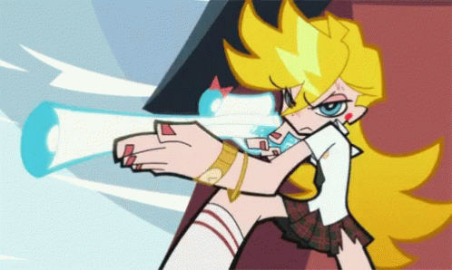
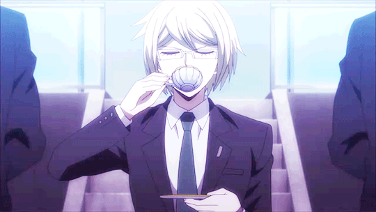
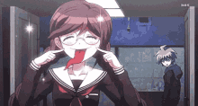
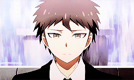
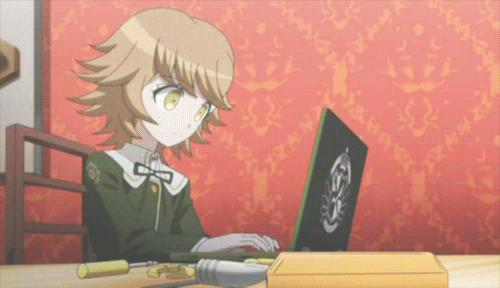
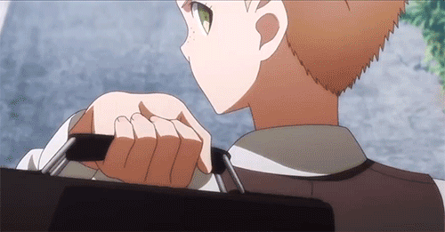

✺◟(◉ᓀ◉)◞✺ Sobre Mim
𝅘𝅥𝅯 NOW PLAYING: Dancefloor Orgy de 'Panty & Stocking'
Olá, boa tarde, prazer! Chamo-me Vanessa,
mais conhecida como NessieDubsStuff (ou apenas Nessie), e faço dobragens amadoras desde finais de 2023.
Sou conhecida por fazer fã-dobragens de South Park, e um pouco de outras mídias como Class of '09, ENA, entre muitas outras.

· ✦•······················•✦•······················•✦
☕︎ Inspirações e Origem da EcoFã Studios
A minha inspiração por dobragens vem de fã-dublagens brasileiras, fan-dubs de comics de Undertale, e claro, dobragens de Portugal.Tive sempre o curiosidade de "e se X mídia tivesse uma dobragem em Português de Portugal", e foi assim que surgiu a minha dobragem de South Park, e conto com quase 10 mil seguidores no TikTok :P.
Com isso, criei também a EcoFã Studios a 10 de março de 2024, um grupo que atualmente tem mais de 50 membros, que se juntaram somente pela diversão de fazer fã-dobragens.
Atualmente, sou meio que uma inspiração para certa gente, porque, graças às minhas fã-dobragens, elas também ficaram motivadas para fazer os seus projetos, o que me motiva a mim para continuar a fazer o conteúdo que faço :]

· ✦•······················•✦•······················•✦
✧˖° Personalidade (segundo terceiros)
Segundo o que me dizem, sou uma pessoa cujo a malta fica bué timida e tem medo de falar com. But I don't bite, gng, I promise.Sou muito fechada, mas direta com as minhas opiniões e filosofias. Quando sinto-me confortável, eu tendo a ser bué goofy e deixo a minha boca de marinheiro sobre-sair (quer dizer que digo bués, mas bués palavrões).
Eu também gosto de dar yap sobre os interesses que tenho, se a malta também tiver interesse em ouvir-me, claro.

· ✦•······················•✦•······················•✦
E agora, a word from my sponsors (aka os meus amiginhos)
⪩ Skell (aka Filipa) ⪨
★★★★★ - Even thought I don't know you a lot, you are very kind, and seem funny af + your voice-acting skills are amazing and you're beautiful 🫶 Pick this up queen🙌👑
⪩ GlebSeptic (aka my twin, Dipper) ⪨
★★★★★ - this DUMB STUPID fella is my sister and she is a 5/5 because we're literally Dipper and Mabel.
⪩ Micas (aka Micael/Francês)⪨
★★★★★ - És super chill, ganda amiga, tens piada lowkey fazes me pensar na Dess, e és gentil.
⪩ Gabrifé (aka Gabriel/Café) ⪨
★★★★★ - Adoro-te, pookie.
⪩ Nunkai (aka Nuno/Dekai)⪨
★★★★★ - You're one of the best friends I've ever had, And even if you don't see it, you are one of the most unique people in a good way, and I'm sincerely proud to say I'm your friend. If anyone needs help, they can always count on you. 🙂
⪩ Paiige ⪨
★★★★★ - Super silly to talk to yet one of the most creative people I know! On bob!! 🗣️🙏
⪩ Kenny (aka my lil sis Kanao)⪨
★★★★★ - Nessie, és tipo uma irmã que nunca tive, sempre estiveste aqui para mim e adoro passar tempo contigo, sempre que estou contigo estou feliz :D
Além disso, foste uma das únicas pessoas que me deram uma perspectiva diferente da vida (no bom sentido), não sei o que seria sem ti, broa. I luv ya ♡
⪩ Tommy (aka the n.1 OG) ⪨
★★★★★ - Adoro-te TANTO twin, se não fosse por ti eu não seria quem sou e não estaria onde estou :3 Obrigado por tudo twinnie, ly ♡

· ✦•······················•✦•······················•✦
♡ Interesses
Fora as fã-dobragens, eu também ilustro, leio (ou até a escrevo) fan-fics durante a madrugada e outros hobbies mais raros como programação (sim, fui eu que fiz este site lol)--"GIVE US FANDOMS!!" Calma twins, I got y'all.
- South Park
- Class of '09
- Five Nights at Freddy's
- Bendy and the Ink Machine
- Undertale/Deltarune (e AUs [Underverse included])
- Hotline Miami
- The Last of Us
- Omori
- ENA/Dream BBQ
- Panty & Stocking
- Danganronpa (Animes e Jogos)
- Demon Slayer
- Chainsaw Man (anime only)
- Attack on Titan
- Digital Circus
- The Owl House
- Eddsworld
- Gravity Falls
- Mouthwashing
- Spooky Month
- Pico School
- Tankmen
- Madness Combat
- Mortal Kombat
- Red Dead Redemption
Eis aqui alguns dos fandoms/mídia cujo eu tenho interesse:

· ✦•······················•✦•······················•✦
✦ Curiosidades
Hold up, querem saber mais de mim?Damn, não sou muito boa a falar de mim mesma, but I'll give it a shot ₍ᐢ‥ᐢ₎

· ✦•······················•✦•······················•✦
- Tenho 19 anos, e nasci a 2 de setembro de 2006 (haha, get it? sou virgem lol [isto não teve piada, I know])
- Sou INFJ, o meu alignment é Chaotic/True Neutral, e o meu eneagrama é 4w5
- Sou aromântica e asexual (sinto rara atração), e identifico-me como demi-girl
- O meu estilo de roupa é bué variado no meu mood, mas adoro roupa larga e usar gravata when possible
- Caso ainda não tenham reparado, eu misturo bué inglês com português (yeah, I'm one of those, cry about it)
- As minhas cores favoritas são: preto, vermelho e amarelo (lembra-vos de algo?)
- Eu gosto de dizer que a minha personalidade é separada pelos os meus kins - that is:
- Rantaro Amami - Danganronpa V3 (biggest kin I have fr)
- Shuichi Saihara - Danganronpa V3
- Fuyuhiko Kuzuryuu - Super Danganronpa 2
- Nagito Komaeda - Super Danganronpa 2
- Byakuya Togami - Danganronpa: Trigger Happy Havoc
- Toko Fukawa - Danganronpa: Trigger Happy Havoc
- Zenitsu Agatsuma - Demon Slayer
- Muichiro Tokito - Demon Slayer
- Giyuu Tomioka - Demon Slayer
- Shinobu Kocho - Demon Slayer
- Stan Marsh - South Park
- Kyle Broflovski - South Park
- Dipper Pines - Gravity Falls
- Hero & Basil - Omori
- Zooble - The Amazing Digital Circus
{kind=link}